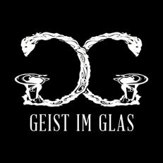

Come for the drinks,
stay for the spirit.
Geist im Glas is a cosy bar in Neukölln where you can enjoy delicious cocktails, try home-made infused spirits, have a laugh and maybe even get kissed. Weekends, we serve one of Berlin’s most indulgent brunches.
Lenaustrasse 27, 12047 Berlin
Bar open from 19:00 every night Brunch time on weekends from 10:00 to 16:00
Cash Only
Weekend Brunch Menu →Get Directions →